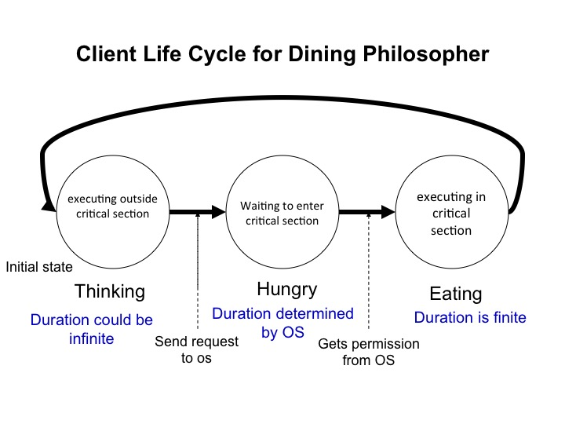
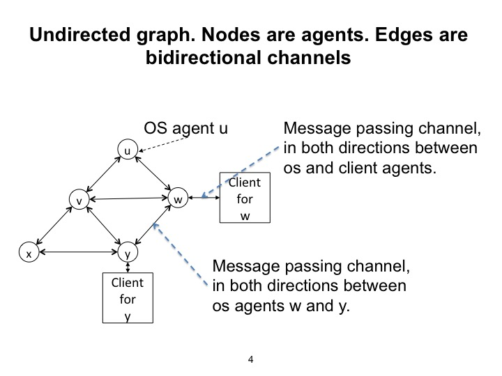
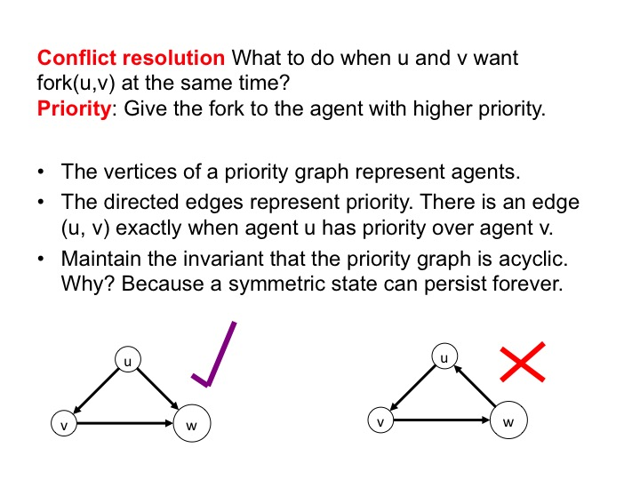
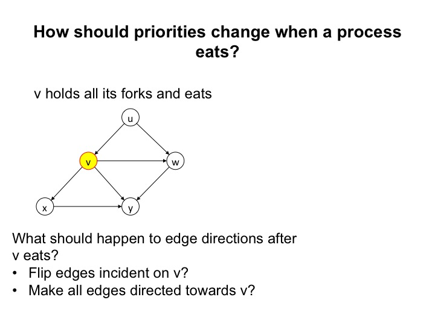
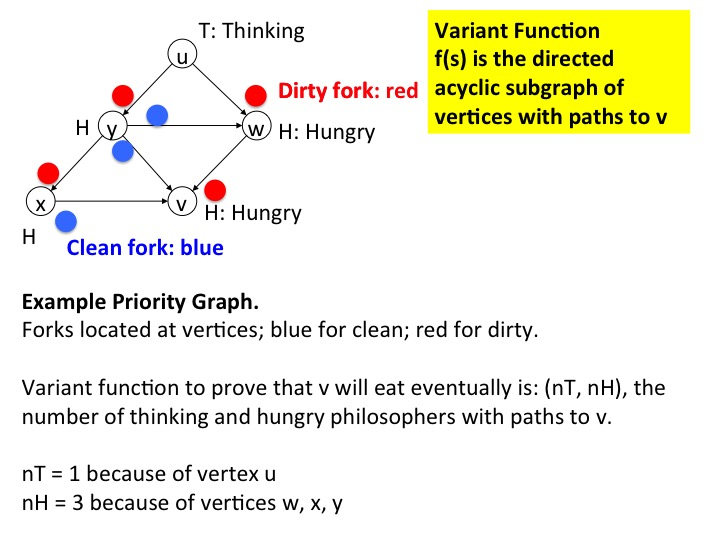
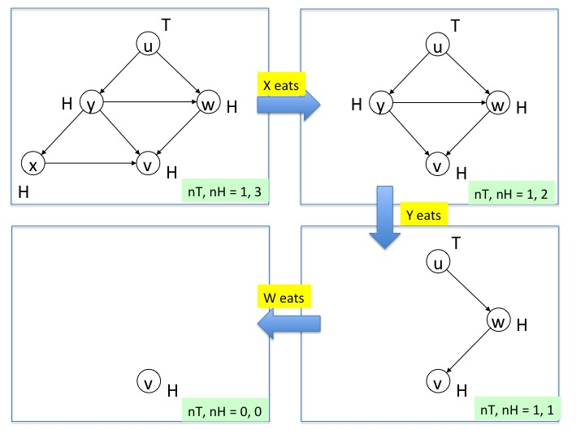

This module describes algorithms for "The Distributed Dining
Philosophers Problem," a problem that exemplifies mutual exclusion of
critical operations among agents in a distributed setting.
This and following modules describe algorithms by which agents manage
conflicts among themselves. This module describes an
algorithm for a distributed mutual exclusion problem called
The Distributed Dining Philosophers Problem.
Key Concepts
1. Mutual Exclusion
The distributed dining philosophers is a generalization of the
mutual exclusion problem to distributed systems. A mutual
exclusion or mutex problem is one in which only one
agent can carry out some activity such as executing a critical
section of a program. Mutex algorithms ensure that all agents
that want to carry out such activities do so eventually.
2. Priorities among Agents
Distributed conflict-resolution algorithms ensure that
when multiple agents are in a conflict that only one of them can
win, every agent wins eventually. A
standard way of managing conflicts is to have agents agree on
relative priorities among themselves; the agent with higher
priority wins.
Distributed algorithms often use a good-neighbor policy to ensure
that all agents win conflicts eventually: An agent that wins a
conflict makes its priority lower than the priorities of all the
agents with which it competes.
3. Tokens and What Agents Know
An agent can resolve a conflict with other agents only if it knows
something about the states of other agents. For example, what
agents want to enter a critical section and what are their
priorities?
What agents know is defined in this module. We used the
concept of tokens to illustrate what agents know. A system has a
fixed number of indivisible tokens which are neither created nor
destroyed. An agent that holds a token knows that no other agent
holds that token. This knowledge is at the core of many conflict
resolution algorithms.
The Problem
Agent States in a Mutual Exclusion Problem
Fig.2: States in Mutual Exclusion
An agent in a mutual exclusion problem is in one of three states:
Outside critical section:
The agent is executing outside its critical section. An agent can remain in this
state for ever, or it may transit after finite time to the next state: waiting to
enter its critical section.
Waiting to enter critical section:
The agent waits to enter critical section until it is given
permission to do so by the operating system.
In critical section:
The agent executes in its critical section. An agent does not
remain in its critical section forever. It does so for only
finite time after which it transits to the state, outside
critical section.
Clients determine transitions from outside critical section to waiting to
enter critical section, and from in critical section to
outside critical section.
The operating system determines transitions from waiting to
enter critical section to outside critical section.
Agent States in the Dining PhilosophersProblem

Fig.3: States in Dining Philosophers
The name "Dining Philosophers" is an example of CS humor
(an oxymoron?).
Philosophers may think for ever, but eat for only finite time. The
algorithm must ensure that hungry philosophers don't starve --- they
get to eat eventually.
The problem and its name were proposed by Edsger W. Dijkstra, a CS pioneer.
The states "Thinking", "Hungry", and "Eating" correspond exactly to
Outside critical section, Waiting to enter critical
section, and In critical section, respectively.
Agent Communication Structure

Fig.4: Communication among Agents
The commununication structure among agents is represented by an
undirected graph in which the nodes are agents and each edge
represents two channels, one in each direction. The agents are either
OS or client agents. There is one client agent associated with each OS
agent. Clients are shown as squares and OS agents as circles.
For example client agent \(w\) is associated with OS agent
\(w\). The diagram does not show all clients so as not to make the
diagram too crowded.
A pair of OS agents are neighbors when there is an edge between
them. A pair of client agents are neighbors when the OS agents with
which they are associated are neighbors. For example, in the figure,
\(w\) and \(y\) are neighbors.
Specification
Safety: Neighbors do not eat at the same time
Let \(safe\) be the predicate Neighboring clients are
not eating, and let \(init\) be a predicate that holds initially.
The safety part of the specification is that \(safe\) holds in every state in every path from
every initial state:
\([init
\Rightarrow A(safe)]\)
Progress: Hungry agents eat eventually
The progress part of the specification is that every hungry agent
transits to eating state eventually.
For every agent \(v\):
\(
v.state = hungry \quad \leadsto \quad v.state = eating
\)
Example of Safety
Fig.5: Diagrams illustrating Safety
Figure 5 shows a client eating as a red node depicting the client and
its OS agent. An uncolored node represents a client that is thinking
or hungry. The diagram on the left shows the system in a safe state:
there are no edges between red vertices. The diagram on the right
shows an unsafe state because there are edges between red vertices.
The Client's Program
We use two tokens that move
between a client and its OS agent. The tokens are called the
resource token and the request token. The client's
states are represented by which tokens the client holds.
Thinking State: A thinking client holds the request token but
not the resource token.
Transition: Thinking to Hungry: Send the request token to
the OS.
Hungry State: The client holds neither the request nor the
resource token.
Transition Hungry to Eating: The client transits to
eating when it receives both the request and resource token.
Eating: The client holds both the request and resource tokens.
Transition from Eating to Thinking:
The client holds sends the resource token to the OS and continues to
hold the request token.
The figure below illustrates the states of the client. The request
token is shown as a square and the resource token as a circle.
Fig.6: Client's Program
Initially all clients are thinking; all resource tokens are with OS
agents; and all request tokens are with clients.
What the OS Knows
While the OS agent holds the request token it knows that its client is
hungry. While the OS agent holds the resource token it knows that its client is
not eating.
Fig.7: OS Agent's Program
When a client transits from thinking to hungry it sends its request
token to the agent. When the OS receives the request token, the OS
also has the resource token; so the OS knows that its client is
hungry. There is an interval after the client sends the request token
and before the OS receives it during which the client is hungry but
the OS doesn't know that. An OS agent does not need to know
what state its client is in at every point. Likewise, a client does
not need to know its OS agent's state at every point.
A client is hungry leads-to its OS agent knowing that its client is
hungry. The leads-to captures the fact that the OS doesn't know
the client's state at the instant that the client transitions from
thinking to hungry.
Introduction of Tokens
We introduce a token on each edge of the agent communication graph,
see figure 4. The token on an edge \(v, w\) is in one of four states:
held by \(v\), in the channel from \(v\) to \(w\), held by \(w\), or
in the channel from \(w\) to \(v\). Therefore while \(v\) holds this
token it knows that \(w\) doesn't hold it. Likewise, while \(w\) holds
this token it knows that \(v\) doesn't.
Fig.7: Fork on each edge of the agent communication
graph
These tokens are called forks. (They are called
chopsticks in some papers.) An agent eats only if it holds
forks for all the edges incident on it. Therefore, while an agent eats
none of its neighbors do, and so the safety specification is satisfied.
Key Question: When does a hungry agent yield
forks?
An eating philosopher holds on to all its forks until it finishes
eating. A thinking philosopher can give a fork to a neighbor that
requests it. So the key question is: Under what conditions should a
hungry neighbor give a fork that it holds to a neighbor that requests
it?
Suppose every hungry agent gives a fork to a neighbor that requests
it. Then we can get the scenario shown in the figure below.
Fig.8: Scenario when hungry agents yield forks
The figure shows a system with 3 agents indexed 0, 1, 2. The forks are
shown as small colored circles. The state on
the left shows agent \(j\) holding the fork that it shares with
agent \((j+1)\:\textrm{mod}\:3\). If each agent yields the fork to
its neighbor we get the state on the right in which agent \(j\)
holds the fork that it shares with
agent \((j-1)\:\textrm{mod}\:3\). So, if all hungry agents yield
forks, the states can alternate for ever between the one on the
left and the one on the right. In this case hungry agents starve: they
remain hungry forever.
If hungry agents don't yield forks then the state on the left persists
for ever. In this case too, hungry agents starve.
Creating a Partial Order of Priorities
Let's assign priorities to agents so that a hungry agent \(v\)
releases a fork to a neighbor \(w\) only if \(v\) has lower priority
than \(w\). If there is a cycle of agents, all with the same priority,
then we get the situation shown in figure 8. So, we will ensure that
priorities form a partial order in all states in all
transitions. Priorities form a partial order exactly when the priority
graph is acyclic. The graph has an edge from \(v\) to \(w\) exactly
when \(v\) has higher priority over \(w\).
In the figure below, the diagram on the left shows an acyclic priority
graph while the one on the right shows a graph with a cycle.

Fig.9: Priority Graph must be Acyclic
How should Priorities Change?

Fig.10: How should priorities change when \(v\)
eats?
How should priorities change when an agent eats so that the priority
graph remains acyclic? For example, consider
the priority graph shown in figure 10. Assume agent \(v\) has all its
forks and is about to eat. Should the directions of edges incident on
\(v\) be flipped? Or should \(v\) have lower priority than all its
neighbors, i.e. all edges incident on \(v\) point towards \(v\)?
What happens if we flip the directions of the edges incident on \(v\)?
After the flip, the edges are directed from \(w\), \(x\) and \(y\) towards \(v\), and
from \(v\) to \(u\). But now we have a cycle: \(y\) to \(v\) to \(u\)
to \(w\) to \(y\). So, flipping edge directions doesn't work.
What happens if agents adopt the good neighbor policy?
The winner of a conflict gives itself lower priority than all the agents
with which it competes. So, an agent that starts eating gives itself lower
priority than all its neighbors. All edges point towards an eating
agent.
Fig.11: Winner gets lower priority than its neighbors
When all edges incident on a vertex point towards the vertex then
there is no cycle through that vertex. So, directing all edges
incident on an eating vertex towards the eating vertex maintains
acyclicity of the graph.
For example, in the figure directing all edges incident on vertex \(v\) towards
\(v\) ensures that no new cycle is created.
Agent's priority does not decrease until the agent
eats.
How an Agent knows its Priority
We assign an attribute clean / dirty to forks.
A fork is either dirty or clean.
The forks held by an eating agent are dirty. When
an agent receives a fork from another agent, the receiving agent
cleans the fork. So the receiver holds a clean fork, and the
fork remains clean until an agent next eats with it.
(This is the "hygenic solution:" Another - sad? - attempt at CS
humor.)
An agent holding a dirty fork knows that it has lower priority than
the agent with which it shares the fork. Likewise,
an agent holding a clean fork knows that it has higher priority than
the agent with which it shares the fork.
If an agent does not hold the fork that it shares with a neighbor then
the agent does not know its priority with respect to that neighbor.
Example of a Fork's Lifecycle
The diagram below shows states of a fork shared by agents \(u\) and
\(v\). The red arrow shows priority, and the black arrows show
channels. The blue dot represents the fork.
In the figure on the top left, agent \(u\) is hungry and holds a clean
fork. So, \(u\) knows that it has priority over \(v\). At this point
\(v\) does not know whether \(v\) has priority over \(u\) or not.
The next figure, at the top right, shows that when \(u\) transits from
hungry to eating, the fork becomes dirty, and \(u\) has lower priority
than \(v\). Agent \(u\) continues to hold the fork while it eats.
The next figure, bottom right, shows the situation after \(u\) gets a
request for the fork from \(v\). Because \(u\) got the request from
\(v\) and \(u\) hasn't sent the fork to \(v\), agent \(u\) knows that
\(v\) is hungry. Since the fork is dirty, \(u\) sends
the fork to \(v\). The figure shows the fork in the channel from \(u\)
to \(v\). While the fork is in the channel it doesn't matter
whether the fork is clean or dirty; however, merely for convenience,
let's assume that \(u\), being hygenic, cleans the fork before sending
it to its partner. While the fork is in a
channel the priority doesn't change but neither \(u\) nor \(v\) knows
what the priority is.
The next figure, bottom left, shows the situation when \(v\) receives
the fork. Receiving the fork doesn't change the priority.
At this point \(v\) is hungry and the fork is
clean and so \(v\) knows that it has higher
priority. \(v\) holds on to the fork until it next eats.
Fig.12: How an Agent knows its Priority
Algorithm
Properties of Reachable States
Here is a list of some of the properties of states in all
trajectories.
The priority graph is acyclic. \(u\) has priority over a neighbor
\(v\) exactly when \(u\) holds the fork that it shares with \(v\)
and the fork is clean, or the fork is in the channel from \(v\) to
\(u\), or \(v\) holds the fork and the fork is dirty.
Eating philosophers hold the forks for all edges incident on them,
and these forks are dirty.
All forks held by thinking philosphers are dirty.
Thinking philosophers never send requests and never receive
forks. Thinking philosophers respond to request for forks by sending
the requested forks.
Initial States
Initially all philosophers are thinking; all forks are dirty; and all channels are
empty. The forks are placed so that the priority graph is acyclic.
The initial assignment of forks is as follows.
Given an arbitrary acyclic graph, for any edge directed from \(v\) to
\(w\), the fork shared by \(v\) and \(w\) is initially at \(w\) and
the fork is dirty.
Algorithm Commands
The algorithm is specified by the following commands.
When a thinking philosophers gets a request for a fork that it holds
it sends the fork. (A fork held by a thinking philosopher is dirty.)
When a thinking philosopher transits to hungry it sends requests for
all forks that it does not hold.
When a hungry philosopher receives a fork, it records the fork as
being clean. If the hungry philosopher holds all its forks, and if
it has no request for any dirty fork that it holds, then it transits
to eating, and records all the forks that it holds in the eating
state as dirty.
When a hungry philosopher receives a request for a fork that it
holds, it sends the fork if the fork is dirty, and holds on to the
fork if it is clean.
When an eating philosopher receives a request for a fork it
registers the request in memory, and continues eating while holding
the fork. When an eating philosopher transits to thinking it sends
forks for all requests that it received.
What could go wrong?
The proof of safety is straightforward: Neighbors aren't eating
because neighbors can't hold the same fork at the same time.
Before we look at the proof of progress, let's see what may go wrong.
Could a group of philosophers exchange forks with each other so that
members of the group eat repeatedly, and starve a philosopher who is
not in the group? For example, in the figure below, could philosophers
\(u, v, w\) exchange forks so that they each eat in turn, and starve
\(y\)?
Fig.13: Potential Problems: What could go wrong?
Could the system enter a deadlock state in which each hungry philosopher in a
group holds only some --- but not all --- of the forks that it needs
to eat, while other members of the group hold the remaining forks?
Proof of Correctness
The algorithm is correct. We are required to prove that every hungery
philosopher eats eventually:
\(
\forall v: \quad v.h \leadsto v.e
\)
where for a philosopher \(v\), \(v.h\) holds exactly when \(v\) is
hungry and \(v.e\) holds exactly when \(v\) is
eating.
Variant Function
To prove this progress property we find a variant function that
satisfies the following two conditions:
Safety: The variant function does not increase while \(v\)
remains hungry.
progress: The following predicate does not hold forever: The
variant function remains unchanged and \(v\) remains hungry.
We propose a variant function which is a pair of integers
\(nT, nH\), which are the number of thinking and hungry philosophers,
respectively, of
higher priority than \(v\).
In terms of the priority graph, \(nT, nH\) are the numbers of thinking
and hungry philosophers (i.e. vertices) with paths to \(v\).
Example of Variant Function
The figure below shows a portion of the priority graph in a state of the
system. The figure only shows philosophers with higher priority than
philosopher \(v\), i.e., it only shows vertices in the graph with
paths to \(v\). Since eating philosophers have lower priority than
their neighbors, eating philosophers don't appear in this graph.
A hungry philosopher is marked with an "H" and a thinking philosopher
with a "T." In the diagram, philosophers \(v, w, x, y\) are hungry and
\(u\) is thinking.
Forks are located at philosophers and are shown as small
colored circles. A dirty fork is colored red and clean one is
blue. For example the fork shared by \(v\) and \(y\) is at \(y\) and
is clean.

Fig.15: A Variant Function: Numbers of higher priority
thinking, hungry agents
Example of Changes to Variant Function
The next figure is an example of changes to the variant function. The
diagram on the top left shows the higher priority vertices in the
state of the previous figure. If agent \(x\) eats next the priority
graph transits to the diagram on the top right, and the variant
function \((nT, nH)\) changes from \((1, 3)\) to \((1, 2)\).

Fig.16: Example of Values of the Variant Function
If agent \(y\) eats next the priority
graph transits to the diagram on the bottom right, and the variant
function \((nT, nH)\) changes from \((1, 2)\) to \((1, 1)\).
If agent \(w\) eats next the priority
graph transits to the diagram on the bottom left, and the variant
function \((nT, nH)\) changes from \((1, 1)\) to \((0, 0)\).
Proof that the variant function does not increase
while \(v\) remains hungry
If a philosopher of higher priority than \(v\) transits from thinking
to hungry then \(nT\) decreases. Though \(nH\) increases, the variant function \((nT,
nH)\) decreases because ordering of function values is done
lexicographically.
If a philosopher of higher priority than \(v\) transits from hungry
to eating then \(nH\) decreases, and so the variant function \((nT,
nH)\) decreases.
Proof that the following predicate does not
hold forever: The variant function remains unchanged and
\(v\) remains hungry.
Let \(w\) be a highest-priority hungry philosopher, i.e. a philosopher with no
hungry philosopher with priority higher than \(w\). (Note: \(w\) may be
the same as \(v\).)
All philosophers with priority higher than \(w\) are thinking. In the
next paragraph we show that either \(w\) gets all its forks and then transits
from hungry to eating, or the variant function decreases.
From the algorithm, a hungry philosopher \(w\) requests forks from its
neighbors. From the algorithm, \(w\) eventually gets forks from
all its lower priority neighbors. A higher priority neighbor \(x\) of
\(w\) is thinking. So when \(x\) gets a request for a fork from \(w\)
either (1) \(x\) sends the requested fork to \(w\) or (2) \(x\) transits from
thinking to hungry in which case the variant function \((nT, nH)\)
decreases.
Summary: Key Ideas of this Module
This module introduced the problem of distributed mutual exclusion;
showed how the good neighbor policy --- a winning agent reduces its
priority to be lower than all the agents that it competes with --
solves this conflict resolution problem; introduced tokens and what
agents know about other agents holding tokens; and showed a proof
pattern that is one of the most common patterns for proving progress.
Review
What is the meaning of mutual exclusion among neighboring
philosophers?
An invariant of the algorithm is that each token is in exactly one
place: an agent or a channel. How does this invariant help in
designing the algorithm?
An invariant of the algorithm is that the relative priorities among
agents forms a partial order --- the priority graph is acyclic. What
can go wrong if the priority graph has cycles?
An agent that has a request for a fork releases the fork if the fork
is dirty, and holds on to the fork if the fork is clean. What could
go wrong if an agent releases a fork when it gets a request,
regardless of whether the fork is clean or dirty?